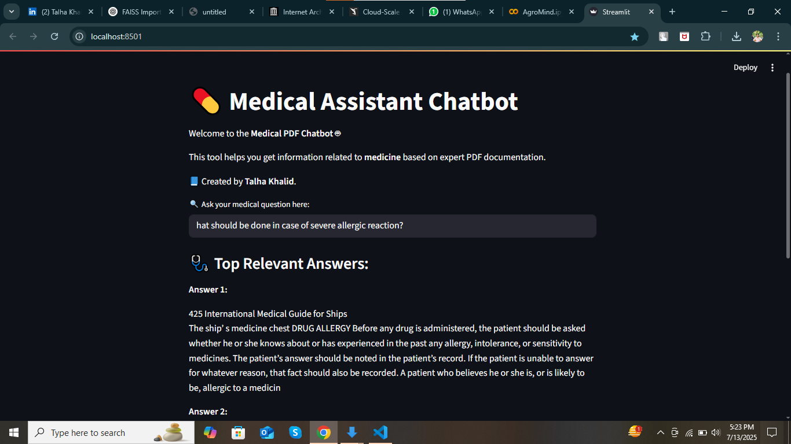
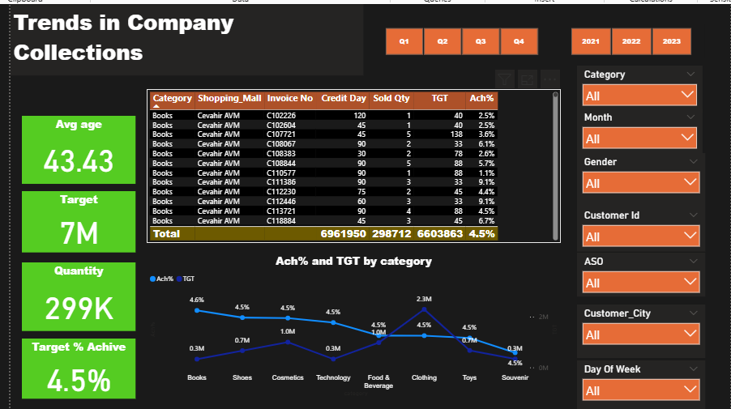
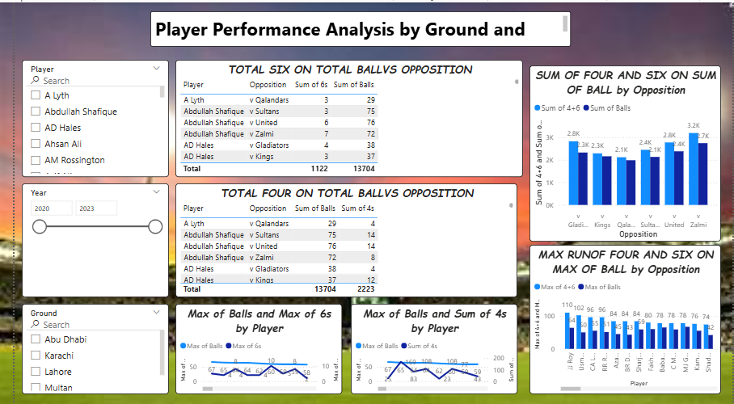

Projects
Air Quality Index Prediction

Problem: Urban areas face challenges in monitoring and predicting AQI trends.
Solution: Developed a machine learning web app using Streamlit that predicts AQI and visualizes pollution levels.
Technologies: Python, Streamlit, Scikit-learn, XGBoost, Pandas, Matplotlib
🔗 GitHub LinkHuman Counting using Video Analytics

Problem: Manual human counting in public places is inaccurate and time-consuming.
Solution: Built a video analytics system to detect and count unique humans in video footage automatically.
Technologies: YOLO, OpenCV, NumPy, Deep Learning
Medical Chatbot (RAG-based)
Problem: Healthcare queries require quick and reliable responses.
Solution: Built a Medical Chatbot using RAG and NLP techniques to provide accurate and context-aware responses.
Technologies: Python, NLP, RAG pipeline, Transformer-based LLM
🔗 GitHub LinkSales & Collection Dashboard
Problem: Businesses need real-time sales and collection insights for decision-making.
Solution: Designed an end-to-end dashboard in Power BI integrated with SQL & Excel for KPI tracking.
Technologies: Power BI, MySQL, Excel
🔗 GitHub LinkPSL Batting Analytics (2020–2024)
Problem: Cricket fans and analysts lack detailed batting performance breakdowns across PSL seasons.
Solution: Analyzed PSL datasets to highlight batting patterns, strike rates, and consistency across players.
Technologies: Python, Pandas, Matplotlib, Seaborn